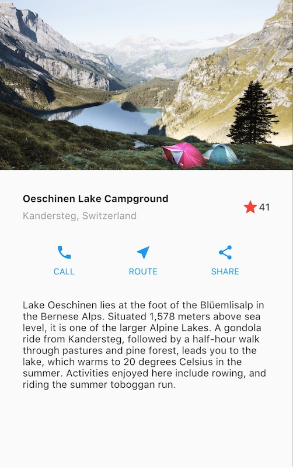
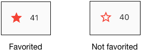
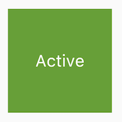
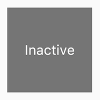

Dokunmalara yanıt veren durumlu (stateful) bir widget nasıl uygulanır.
Neler öğreneceksiniz: * Dokunmalara (taps) nasıl yanıt verilir. * Özel bir widget nasıl oluşturulur. * Durumsuz (stateless) ve durumlu (stateful) widget’lar arasındaki fark.
Uygulamanızı kullanıcı girdilerine tepki verecek şekilde nasıl değiştirirsiniz? Bu eğitimde, yalnızca etkileşimli olmayan widget’lar içeren bir uygulamaya etkileşim ekleyeceksiniz. Özellikle, iki durumsuz widget’ı yöneten özel bir durumlu widget oluşturarak bir simgeyi dokunulabilir hale getireceksiniz.
Düzen oluşturma (building layouts) eğitimi, aşağıdaki ekran görüntüsü için düzenin nasıl oluşturulacağını göstermişti.

Düzen eğitimi uygulaması
Uygulama ilk açıldığında, yıldız koyu kırmızıdır; bu, bu gölün daha önce favorilere eklendiğini gösterir. Yıldızın yanındaki sayı, 41 kişinin bu gölü favorilere eklediğini belirtir. Bu eğitimi tamamladıktan sonra, yıldıza dokunmak favori durumunu kaldıracak, dolu yıldızı bir dış çizgiyle değiştirecek ve sayıyı azaltacaktır. Tekrar dokunmak gölü favorilere ekleyecek, dolu bir yıldız çizecek ve sayıyı artıracaktır.

Bunu başarmak için, kendileri de birer widget olan hem yıldızı hem de sayıyı içeren tek bir özel widget oluşturacaksınız. Yıldıza dokunmak her iki widget’ın da durumunu değiştirir, bu nedenle aynı widget her ikisini de yönetmelidir.
Doğrudan koda geçmek isterseniz Adım 2: StatefulWidget’ın alt sınıfını oluşturma bölümüne gidebilirsiniz. Durumu yönetmenin farklı yollarını denemek isterseniz, Durumu yönetmek (Managing state) bölümüne atlayın.
Bir widget ya durumlu (stateful) ya da durumsuzdur (stateless). Eğer bir widget değişebiliyorsa—örneğin bir kullanıcı onunla etkileşime girdiğinde—o widget durumludur.
Icon, IconButton ve Text durumsuz
widget örnekleridir. Stateless widget’lar StatelessWidget
sınıfının alt sınıfıdır.Checkbox,
Radio, Slider, InkWell,
Form ve TextField durumlu widget örnekleridir.
Stateful widget’lar StatefulWidget sınıfının alt
sınıfıdır.Bir widget’ın durumu, widget’ın durumunu görünümünden ayıran bir
State nesnesinde saklanır. Durum, bir kaydırıcının (slider)
mevcut değeri veya bir onay kutusunun işaretli olup olmadığı gibi
değişebilen değerlerden oluşur. Widget’ın durumu değiştiğinde, durum
nesnesi setState() öğesini çağırarak çerçeveye (framework)
widget’ı yeniden çizmesini söyler.
Bunun amacı ne? * Durumlu bir widget iki sınıf
tarafından uygulanır: StatefulWidget’ın bir alt sınıfı ve
State’in bir alt sınıfı. * Durum (state) sınıfı, widget’ın
değiştirilebilir durumunu ve widget’ın build() yöntemini
içerir. * Widget’ın durumu değiştiğinde, durum nesnesi
setState() öğesini çağırarak çerçeveye widget’ı yeniden
çizmesini söyler.
Bu bölümde, özel bir durumlu widget oluşturacaksınız. İki durumsuz
widget’ı—koyu kırmızı yıldız ve yanındaki sayısal sayım—bir satırı
(Row) ve iki çocuk widget’ı (IconButton ve
Text) yöneten tek bir özel durumlu widget ile
değiştireceksiniz.
Özel bir durumlu widget uygulamak iki sınıf oluşturmayı gerektirir:
1. Widget’ı tanımlayan StatefulWidget’ın bir alt sınıfı. 2.
O widget için durumu içeren ve widget’ın build() yöntemini
tanımlayan State’in bir alt sınıfı.
Bu bölüm, göller uygulaması için FavoriteWidget adlı
durumlu bir widget’ın nasıl oluşturulacağını gösterir. Kurulumdan sonra
ilk adımınız, FavoriteWidget için durumun nasıl
yönetileceğini seçmektir.
Uygulamayı düzen oluşturma eğitiminde zaten oluşturduysanız, bir
sonraki bölüme geçin. 1. Ortamınızı kurduğunuzdan emin olun. 2. Yeni bir
Flutter uygulaması oluşturun. 3. lib/main.dart dosyasını
main.dart ile değiştirin. 4. pubspec.yaml
dosyasını pubspec.yaml ile değiştirin. 5. Projenizde bir
images dizini oluşturun ve lake.jpg dosyasını
ekleyin.
Bağlı ve etkin bir cihazınız olduğunda veya iOS simülatörünü (Flutter kurulumunun parçası) ya da Android emülatörünü (Android Studio kurulumunun parçası) başlattığınızda hazırsınız demektir!
Bir widget’ın durumu çeşitli şekillerde yönetilebilir, ancak
örneğimizde widget’ın kendisi, FavoriteWidget, kendi
durumunu yönetecektir. Bu örnekte, yıldızı değiştirmek, üst widget’ı
veya kullanıcı arayüzünün geri kalanını etkilemeyen izole bir eylemdir,
bu nedenle widget durumunu dahili olarak ele alabilir.
Widget ve durumun ayrılması ve durumun nasıl yönetilebileceği hakkında daha fazla bilgiyi Durumu yönetmek bölümünde bulabilirsiniz.
FavoriteWidget sınıfı kendi durumunu yönetir, bu nedenle
bir State nesnesi oluşturmak için
createState() yöntemini geçersiz kılar (override). Çerçeve,
widget’ı oluşturmak istediğinde createState() yöntemini
çağırır. Bu örnekte, createState(), bir sonraki adımda
uygulayacağınız _FavoriteWidgetState’in bir örneğini
döndürür.
class FavoriteWidget extends StatefulWidget {
const FavoriteWidget({super.key});
@override
State<FavoriteWidget> createState() => _FavoriteWidgetState();
}Not: Alt çizgi (_) ile başlayan üyeler veya sınıflar özeldir (private). Daha fazla bilgi için Dart dili belgelerindeki Kütüphaneler ve importlar bölümüne bakın.
_FavoriteWidgetState sınıfı, widget’ın ömrü boyunca
değişebilen verileri saklar. Uygulama ilk açıldığında, kullanıcı arayüzü
gölün “favori” durumuna sahip olduğunu gösteren koyu kırmızı bir yıldız
ve 41 beğeni görüntüler. Bu değerler _isFavorited ve
_favoriteCount alanlarında saklanır:
class _FavoriteWidgetState extends State<FavoriteWidget> {
bool _isFavorited = true;
int _favoriteCount = 41;Sınıf ayrıca, kırmızı bir IconButton ve
Text içeren bir satır oluşturan build()
yöntemini de tanımlar. IconButton kullanırsınız (Icon
yerine) çünkü bir dokunmayı işlemek için geri çağırma işlevini
(_toggleFavorite) tanımlayan bir onPressed
özelliği vardır. Geri çağırma işlevini bir sonraki adımda
tanımlayacaksınız.
class _FavoriteWidgetState extends State<FavoriteWidget> {
// ···
@override
Widget build(BuildContext context) {
return Row(
mainAxisSize: MainAxisSize.min,
children: [
Container(
padding: const EdgeInsets.all(0),
child: IconButton(
padding: const EdgeInsets.all(0),
alignment: Alignment.center,
icon: (_isFavorited
? const Icon(Icons.star)
: const Icon(Icons.star_border)),
color: Colors.red[500],
onPressed: _toggleFavorite,
),
),
SizedBox(width: 18, child: SizedBox(child: Text('$_favoriteCount'))),
],
);
}
// ···
}İpucu: Text’i bir SizedBox
içine yerleştirmek ve genişliğini ayarlamak, metin 40 ve 41 değerleri
arasında değiştiğinde fark edilebilir bir “zıplamayı” önler — aksi
takdirde bu değerlerin farklı genişlikleri olduğu için bir zıplama
meydana gelirdi.
IconButton’a basıldığında çağrılan
_toggleFavorite() yöntemi, setState()’i
çağırır. setState()’i çağırmak kritiktir, çünkü bu
çerçeveye widget’ın durumunun değiştiğini ve widget’ın yeniden çizilmesi
gerektiğini söyler. setState()’e verilen işlev argümanı,
kullanıcı arayüzünü şu iki durum arasında değiştirir:
star simgesi ve 41 sayısıstar_border simgesi ve 40 sayısıvoid _toggleFavorite() {
setState(() {
if (_isFavorited) {
_favoriteCount -= 1;
_isFavorited = false;
} else {
_favoriteCount += 1;
_isFavorited = true;
}
});
}Uygulamanın build() yönteminde özel durumlu widget’ınızı
widget ağacına ekleyin. İlk olarak, Icon ve
Text’i oluşturan kodu bulun ve silin. Aynı konumda, durumlu
widget’ı oluşturun:
child: Row(
children: [
// ...
Icon(
Icons.star,
color: Colors.red[500],
),
const Text('41'),
const FavoriteWidget(),
],
),İşte bu kadar! Uygulamayı “hot reload” yaptığınızda, yıldız simgesi artık dokunmalara yanıt vermelidir.
Bunun amacı ne?
Durumlu widget’ın durumunu kim yönetir? Widget’ın kendisi mi? Üst widget mı? Her ikisi mi? Başka bir nesne mi? Cevap… duruma göre değişir. Widget’ınızı etkileşimli hale getirmenin birkaç geçerli yolu vardır. Siz, widget tasarımcısı olarak, widget’ınızın nasıl kullanılmasını beklediğinize bağlı olarak kararı verirsiniz. İşte durumu yönetmenin en yaygın yolları:
Hangi yaklaşımı kullanacağınıza nasıl karar verirsiniz? Aşağıdaki ilkeler karar vermenize yardımcı olmalıdır:
Üç basit örnek oluşturarak durumu yönetmenin farklı yollarını
göstereceğiz: TapboxA, TapboxB ve TapboxC. Örneklerin hepsi benzer
şekilde çalışır—her biri dokunulduğunda yeşil veya gri kutu arasında
geçiş yapan bir kapsayıcı (container) oluşturur. _active
boolean değeri rengi belirler: aktif için yeşil veya pasif için gri.


Bu örnekler, Container üzerindeki etkinlikleri yakalamak
için GestureDetector kullanır.
Bazen widget’ın durumunu dahili olarak yönetmesi en mantıklısıdır.
Örneğin, ListView içeriği render kutusunu aştığında
otomatik olarak kayar. ListView kullanan çoğu geliştirici
ListView’ın kaydırma davranışını yönetmek istemez, bu
nedenle ListView kendi kaydırma ofsetini (scroll offset)
kendisi yönetir.
_TapboxAState sınıfı:
TapboxA için durumu yönetir._active boolean
değerini tanımlar._active değerini güncelleyen ve
UI’ı güncellemek için setState() işlevini çağıran
_handleTap() işlevini tanımlar.import 'package:flutter/material.dart';
// TapboxA kendi durumunu yönetir.
//------------------------- TapboxA ----------------------------------
class TapboxA extends StatefulWidget {
const TapboxA({super.key});
@override
State<TapboxA> createState() => _TapboxAState();
}
class _TapboxAState extends State<TapboxA> {
bool _active = false;
void _handleTap() {
setState(() {
_active = !_active;
});
}
@override
Widget build(BuildContext context) {
return GestureDetector(
onTap: _handleTap,
child: Container(
width: 200,
height: 200,
decoration: BoxDecoration(
color: _active ? Colors.lightGreen[700] : Colors.grey[600],
),
child: Center(
child: Text(
_active ? 'Active' : 'Inactive',
style: const TextStyle(fontSize: 32, color: Colors.white),
),
),
),
);
}
}
// ... (MyApp kodu kısalık için atlanmıştır)Genellikle üst widget’ın durumu yönetmesi ve alt widget’ına ne zaman
güncelleneceğini söylemesi en mantıklısıdır. Örneğin,
IconButton bir simgeye dokunulabilir bir düğme muamelesi
yapmanıza olanak tanır. IconButton durumsuz bir widget’tır
çünkü üst widget’ın düğmenin dokunulup dokunulmadığını bilmesi
gerektiğine karar verdik, böylece uygun eylemi gerçekleştirebilir.
Aşağıdaki örnekte, TapboxB durumunu bir geri çağırma (callback) aracılığıyla üstüne dışa aktarır. TapboxB herhangi bir durum yönetmediği için StatelessWidget alt sınıfıdır.
ParentWidgetState sınıfı:
_active durumunu yönetir._handleTapboxChanged()’i uygular.setState()’i
çağırır.TapboxB sınıfı:
StatelessWidget’ı genişletir (extends).import 'package:flutter/material.dart';
// ParentWidget, TapboxB için durumu yönetir.
//------------------------ ParentWidget --------------------------------
class ParentWidget extends StatefulWidget {
const ParentWidget({super.key});
@override
State<ParentWidget> createState() => _ParentWidgetState();
}
class _ParentWidgetState extends State<ParentWidget> {
bool _active = false;
void _handleTapboxChanged(bool newValue) {
setState(() {
_active = newValue;
});
}
@override
Widget build(BuildContext context) {
return SizedBox(
child: TapboxB(active: _active, onChanged: _handleTapboxChanged),
);
}
}
//------------------------- TapboxB ----------------------------------
class TapboxB extends StatelessWidget {
const TapboxB({super.key, this.active = false, required this.onChanged});
final bool active;
final ValueChanged<bool> onChanged;
void _handleTap() {
onChanged(!active);
}
@override
Widget build(BuildContext context) {
return GestureDetector(
onTap: _handleTap,
child: Container(
width: 200,
height: 200,
decoration: BoxDecoration(
color: active ? Colors.lightGreen[700] : Colors.grey[600],
),
child: Center(
child: Text(
active ? 'Active' : 'Inactive',
style: const TextStyle(fontSize: 32, color: Colors.white),
),
),
),
);
}
}Bazı widget’lar için karışık bir yaklaşım en mantıklısıdır. Bu senaryoda, durumlu widget durumun bir kısmını yönetir ve üst widget durumun diğer yönlerini yönetir.
TapboxC örneğinde, dokunulduğunda (tap down), kutunun
etrafında koyu yeşil bir sınır belirir. Dokunma bırakıldığında (tap up),
sınır kaybolur ve kutunun rengi değişir. TapboxC,
_active durumunu üstüne dışa aktarır ancak
_highlight durumunu dahili olarak yönetir. Bu örnekte iki
State nesnesi vardır: _ParentWidgetState ve
_TapboxCState.
_ParentWidgetState nesnesi:
_active durumunu yönetir._handleTapboxChanged()’i uygular._active durumu
değiştiğinde UI’ı güncellemek için setState()’i
çağırır._TapboxCState nesnesi:
_highlight durumunu yönetir.GestureDetector tüm dokunma olaylarını dinler.
Kullanıcı aşağı bastığında (taps down), vurgulamayı ekler (koyu yeşil
bir sınır olarak uygulanır). Kullanıcı dokunmayı bıraktığında,
vurgulamayı kaldırır._highlight durumu değiştiğinde UI’ı güncellemek için
setState()’i çağırır.widget özelliğini kullanarak
uygun eylemi gerçekleştirmek için bu durum değişikliğini üst widget’a
iletir.// (Kodun tam yapısı yukarıdaki mantığı takip eder, kısalık için burada özetlenmiştir)
// TapboxC hem kendi iç vurgu durumunu (_highlight) yönetir
// hem de aktiflik durumunu (_active) üst widget'a bildirir.Alternatif bir uygulama, vurgu durumunu üst widget’a dışa aktarırken aktif durumu dahili olarak tutabilirdi, ancak birinden o dokunma kutusunu kullanmasını isteseydiniz, muhtemelen bunun pek mantıklı olmadığından şikayet ederdi. Geliştirici, kutunun aktif olup olmadığını önemser. Geliştirici muhtemelen vurgulamanın nasıl yönetildiğini önemsemez ve dokunma kutusunun bu ayrıntıları halletmesini tercih eder.
Bu doküman, Flutter resmi dokümantasyonundan türetilmiş Türkçe ders notudur.
Orijinal kaynak:
https://docs.flutter.dev/ui/interactivity
Türkçe çeviri ve düzenleme:
Doç. Dr. Hakan Temiz
Bu dokümandaki içerikler aşağıdaki açık lisanslar kapsamında sunulmaktadır:
Metin içerikleri (anlatım ve açıklamalar):
Flutter resmi dokümantasyonundan alınmış veya uyarlanmıştır.
Lisans: Creative Commons Attribution 4.0 International
(CC BY 4.0)
https://creativecommons.org/licenses/by/4.0/
Bu lisans kapsamında: - İçerik kopyalanabilir, dağıtılabilir ve
uyarlanabilir
- Ticari kullanım serbesttir
- Kaynak belirtilmesi zorunludur
Kod örnekleri:
Flutter resmi dokümantasyonundan alınmış veya uyarlanmıştır.
Lisans: BSD 3-Clause License
https://opensource.org/licenses/BSD-3-Clause
Bu lisans kapsamında: - Kodlar kopyalanabilir, değiştirilebilir ve
dağıtılabilir
- Ticari kullanım serbesttir
- Lisans bildiriminin korunması gerekir